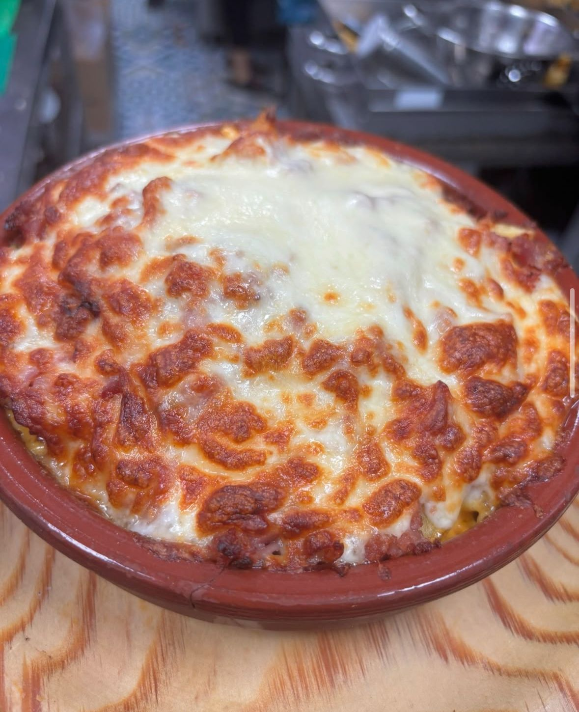
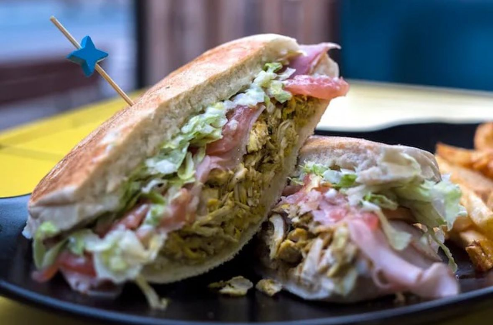
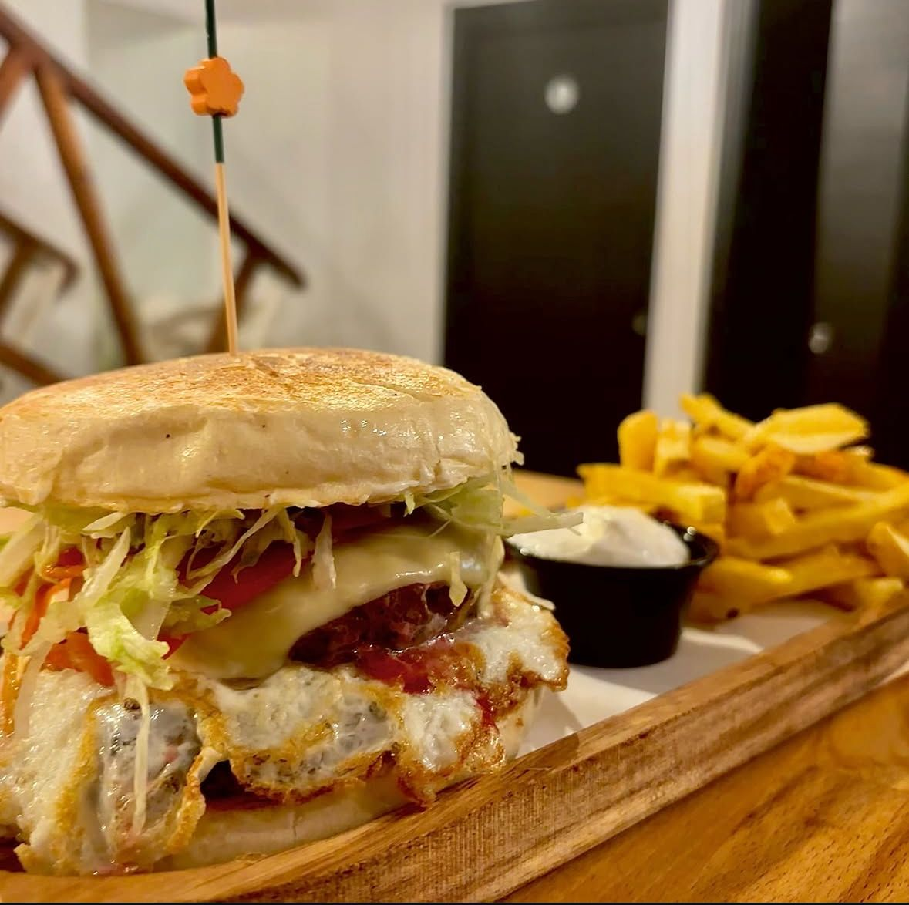

MYA Pedregalejo
¡Hola! Soy Andrés, uno de los fundadores de MYA Pedregalejo, y me alegra mucho que tengas interés en conocer un poco más de nuestra historia.
Después de muchos años detrás de la barra en Mafalda, aquella hamburguesería mítica de Pedregalejo que tantos buenos momentos nos dio, Mamen y yo decidimos tomarnos un descanso. Pero la pasión por la cocina, por nuestra gente del barrio y por ese ambiente especial que se crea alrededor de una buena comida… nunca se apagó.
Fue entonces cuando nació MYA, en agosto de 2022. El nombre es sencillo pero muy personal: son nuestras iniciales. Volvimos con ganas de hacer lo que más nos gusta, y qué mejor sitio que nuestro querido Pedregalejo, el barrio que siempre ha sido casa.
Aquí en MYA recuperamos lo que la gente más nos pedía: los camperos malagueños, hechos con el cariño de siempre, pero también le dimos una vuelta para ofrecer algo más actual, fresco, nuestro. No buscamos hacer algo pretencioso, sino mantener lo auténtico: buen producto, trato cercano y ese sabor que te hace volver.
Si alguna vez viniste a Mafalda, seguro que algo te suena. Y si no, te invito a venir, probar uno de nuestros camperos y, si quieres, charlar un rato. Al final, MYA no es solo un sitio para comer, es un lugar para reencontrarse.
¡Te esperamos con los brazos abiertos y el grill encendido! 🍔🔥
— Andrés



¿Dónde nos encontramos?
Estamos situados en Calle Bolivia, 79, en pleno corazón de Pedregalejo, Málaga — a tan solo unos pasos del mar y del Paseo Marítimo.
Es una zona con mucha vida, donde el ambiente marinero de siempre se mezcla con la juventud, las familias del barrio y los que vienen buscando algo auténtico. Aquí, entre espetos, bicis y terrazas, te abrimos las puertas de MYA para que te sientas como en casa.
Así que ya sabes, si estás por la zona o planeas venir, pásate por Calle Bolivia 79. ¡Nos encantará recibirte!